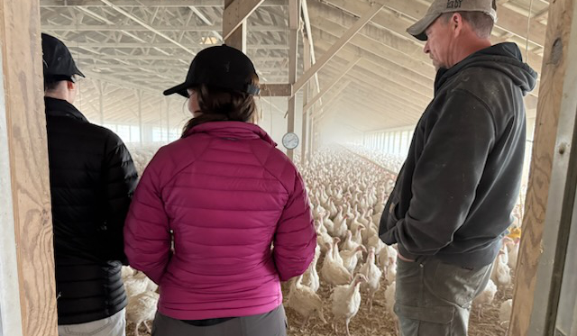

		<!-- Main -->
			<article id="main">
					
				<!-- One -->
					<section class="wrapper style4 container">
					
						<!-- Content -->
							<div class="content">
								<section>
										<header>
										<h3><strong>Poultry microbiomes
</strong></h3> </header>


<div class="row">


<div class="6u">
<p> Understanding the poultry microbiome has important implications for animal health, welfare and production efficiency. At <a href="https://www.barnwellbio.com/">Barnwell Bio</a>, I apply metagenomic and bioinformatic approaches to analyze environmental samples from poultry production systems. This work connects microbiome data to animal health outcomes with the goal of enabling early detection of pathogens and dysbiosis, and supporting more informed, evidence-backed decision-making for producers and veterinarians.</p>

</div>

	<div class="6u">
		<a class="image featured special"></a>
	</div>
</div>


</p>
		

					</section>
					
					
					
					
						
										
								
					
			</article>
